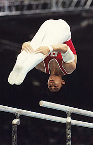

Naoya Tsukahara (JPN)
1997 World AA Bronze Medalist
1999 World AA Silver Medalist

Medal Total
Olympic Games: 1
Gold
World Championships: 1 Silver, 3 Bronze
Naoya was born on June 25, 1977 in Tokyo. His father, Mitsuo, was one of Japan's best gymnasts and his mother, Cheiko, was a gymnast as well. For many years, Naoya was coached by Soviet champion Nikolai Andrianov.
Competition Results
1994
Jr. Asian Championsips: 6th R
1995
International Junior Championships: 4th AA, 2nd PB, 2nd HB, 3rd FX, 3rd V, 6th R
JPN Championships: 2nd AA, 3rd FX, 3rd PB
1996
Chunichi Cup: 4th AA, 1st FX, 3rd R, 3rd HB, 4th V, 4th PH, 6th PB
DTB Cup: 2nd FX, 2nd PB
Gander Memorial: 6th AA
JPN Championships: 1st AA, 3rd PB
JPN Olympic Trials: 5th AA
NHK Cup: 5th AA
Olympic Games: 10th Team, 12th AA
Swiss Cup: 2nd FX
1997
JPN Championships: 1st AA, 1st FX, 1st PB, 3rd PH, 3rd V
NHK Cup: 2nd AA
Pitari Cup: 1st AA
University Games: 2nd Team, 6th AA, 1st V, 2nd PB, 6th FX
World Championships: 4th Team, 3rd AA, 3rd PB
1998
Asian Games: 3rd AA, 3rd V, 4th FX, 5th PH, 5th PB
Chunichi Cup: 2nd AA, 2nd PH, 4th R, 4th V, 4th PB, 6th FX
Goodwill Games: 6th AA, 5th PB
JPN Championships: 1st AA, 1st V, 3rd PH, 3rd R, 4th PB
NHK Cup: 1st AA
World Cup: 4th V, 6th PB
1999
Chunichi Cup: 1st AA, 1st R, 2nd HB, 4th PH, 4th V, 6th FX, 6th PB
JPN Championships: 1st AA, 4th V, 6th FX, 6th PB, 8th HB
NHK Cup: 1st AA
University Games: 1st Team, 6th AA
World Championships: 4th Team, 2nd AA, 2nd PB
2000
Chunichi Cup: 3rd AA
JPN Championships: 1st AA
NHK Cup: 1st AA
Olympic Games: 4th Team, 18th AA, 8th HB
Pre-Olympics: 2nd AA, 2nd R, 3rd HB, 5th FX, 8th PB
2001
Chunichi Cup: 1st AA
JPN Championships: 2nd AA
NHK Cup: 1st AA
University Games: 2nd AA
2002
Chunichi Cup: 2nd AA
2003
Chunichi Cup: 2nd AA
NHK Cup: 2nd AA
World Championships: 3rd Team, 7th AA, 4th PB
2004
Olympics: 1st Team
This page was created on December
23, 2004 and was last updated on June 11, 2010.
© Gymn Forum